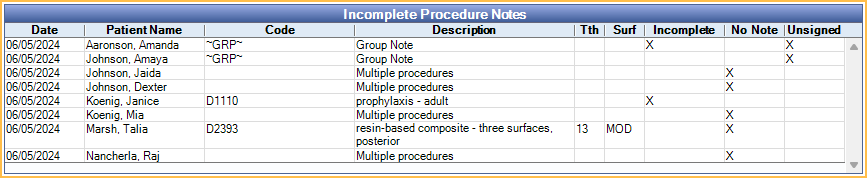

Incomplete Procedure Notes Report
Use this report to find procedures with an incomplete note or to find incomplete group notes.
In Standard Reports, in the Daily section, click Incomplete Procedure Notes.

Optionally, this report can include procedures with no note or an unsigned note.
Definitions:
- Incomplete Procedure Note: A procedure with uncompleted quotations in the Notes text (e.g., Due Date ""). Flagged with a red Incomplete Note warning above the note.
- Incomplete Auto Notes: Procedures with Auto Notes that have skipped prompts.
- No Procedure Note: The procedure has no text in the Notes box, and all other procedures with the same date also have no note. If a procedure has uncompleted quotations, any other procedure completed the same day, without a note, will be excluded from the list.
- Unsigned Procedure Note: There is a note on the procedure that has not been signed (valid or invalid signature).
Filters
Set the report filters to update the Incomplete Procedure Notes grid.

Include procedures with no notes on any procedure for the same day: Check to find patients with no notes for any procedures completed on the same day.
Include procedures with a note that is unsigned: Check to include procedures with a note that is not signed (valid or invalid signature).
- If Include procedures with no notes on any procedure for the same day is also checked and no note exists in the procedure note field, the Unsigned column is blank.
Show Excluded Codes: Check to include codes normally excluded from the report. Set excluded codes in Report Setup: Misc Settings, Excluded Codes for Incomplete Procedure Notes Report.
Clinics: Only available when Clinics are enabled in Show Features. Select the clinics to include in the report. Check All (includes hidden) to include all clinics, including those marked hidden.
- Filters by clinic assigned to procedure.
- If user is restricted to specific clinics, only accessible clinics are listed. When selecting All (includes hidden), results include all clinics user has access to, including those marked hidden; results do not include clinics user is restricted from or procedures not assigned to a clinic.
Providers: Select the providers to include. Check All to include all listed providers.
- When a clinic is selected, only providers limited to the clinic are listed. See Provider Edit, Clinics Tab.
- Filters by provider assigned to procedure (i.e., treating provider).
Group By: Results are sorted by completed procedure date and patient name. Select one of the following to group the list:
- Procedure: Lists individual procedures (one row per procedure).
- Patient: Groups by patient name (one row per patient).
- Date and Patient: Groups by completed procedure date then patient name (one row per patient, per date).
From / To: Use the From and To dates dropdown menu to select a date range. Includes patients matching the filter criteria within the selected date range. Defaults to today's date.
Incomplete Procedure Notes
Click Refresh to update report results based on the currently selected filters.
Available columns may change based on the filter criteria. The following is an example of report results and descriptions of each column.
- Date: Procedure date.
- Patient Name: Patient last name and first name.
- Code: Procedure code associated with the incomplete note. If Group By behavior is set to Patient or Date and Patient, procedure code is listed only when there is a single procedure (i.e., multiple procedure groups have no codes listed).
- Description: Procedure description. If Group By behavior is set to Patient or Date and Patient, a description of "Multiple Procedures" is shown when multiple procedures contain incomplete notes.
- Tth: Tooth number associated with an individual procedure.
- Surf: Tooth surface associated with an individual procedure.
- Incomplete: X indicates the note is tagged as incomplete ("") or there is an incomplete auto note (i.e., unanswered prompts). Column only appears when Include procedures with no notes on any procedure for the same day or Include procedures with a note that is unsigned are checked.
- No Note: X indicates a blank procedure note. Column only appears when Include procedures with no notes on any procedure for the same day is checked.
- Unsigned: X indicates a note that contains no valid signature. Column only appears when Include procedures with a note that is unsigned is checked
Right-click or double-click a row to open the Chart Module for the selected patient.
Print / Export
Print: Click to send the report results to the default printer.
Export: Click to save the report results as a TXT or XLS file.